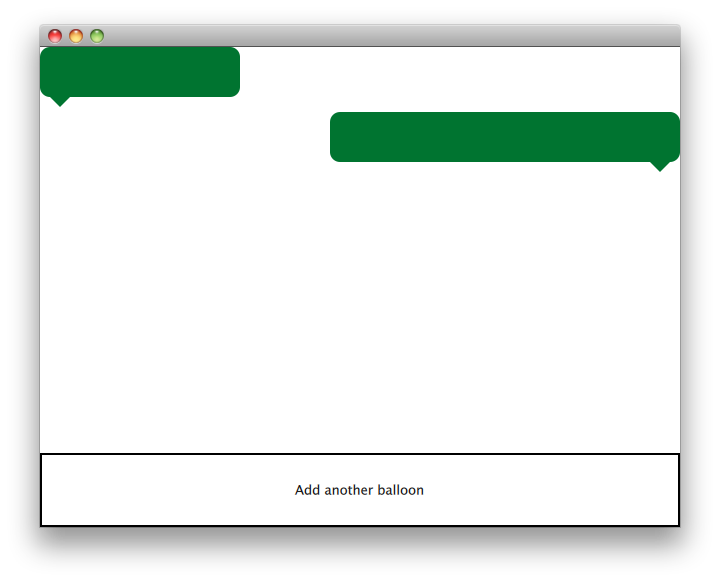

Scenegraph Painted Item Example
Shows how to implement QPainter-based custom scenegraph items.
The Painted Item example shows how to use the QML Scene Graph framework to implement custom scenegraph items using QPainter.

The QQuickPaintedItem class is a class derived from QQuickItem for implementing custom QML Scene Graph items using the QPainter interfaces.
The example consists of an item class, a plugin class and a QML file to use this plugin. The TextBalloon class represents the individual text balloons extending QQuickPaintedItem, the TextBalloonPlugin class represents the skeleton code for a QtQuick plugin and the textballoons.qml file is used to load the plugin and display the text balloons.
We will focus on the TextBalloon class first and continue with the textballoons.qml file. For an example on how to implement a QtQuick plugin please look at Writing an Extension Plugin
TextBalloon Class Declaration
The TextBalloon class inherits from QQuickPaintedItem. QQuickPaintedItem is the base class for all QPainter based items in the QML Scene Graph framework.
To implement a QQuickPaintedItem you must implement QQuickPaintedIem's pure virtual function paint() which implements the painting of the element.
TextBalloon Class Definition
We have to be sure to initialize the rightAligned property for a TextBalloon item.
Then we implement the paint() function which is automatically called by the Scenegraph framework to paint the contents of the item. The function paints the item in local coordinates.
We start with setting the pen and brush on the item to define the look of the item. After that we start drawing. Note that the boundingRect() item is called to draw depending on the size of the item. The rectangle returned by the boundingRect() function is the size of the item as defined in the QML file.
textballoons.qml file
The Interface consists of two main parts. The scrollable area with the textballoons and the controls button to add new balloons.
BalloonView
The balloonModel contains two elements at application start which will be displayed by the balloonView. The balloonView alernates the TextBalloon delegate items between left-aligned and right-aligned.
Controls
The controls part of the UI contains a rectangle with a MouseArea which changes color when the mouse hovers over it. This control 'button' adds a new element to the end of the model with a random width.
Files: